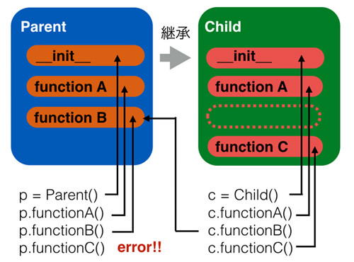
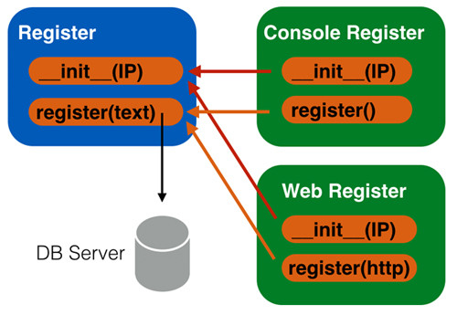
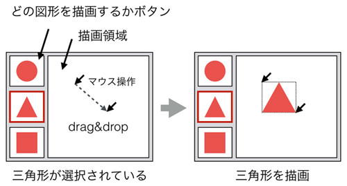
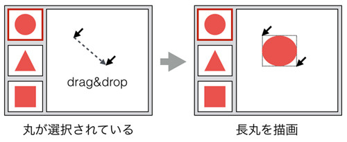
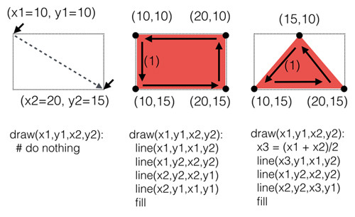

あとで書く
「オーバーライド」は継承したクラスで継承元のクラスのメソッドを「上書き」する手法です。 前章にてコンストラクタであまり説明をせずにオーバーライドを使いましたが、もう少ししっかり解説したいと思います。
まず、そもそも何のためにオーバーライドを使うかということなのですが、 一般的には後述する「ポリモーフィズム」を実現するためです。 ポリモーフィズムについての解説で、オーバーライドのメリットやどういう場面で使うかといったことを扱うため、 ここではとりあえずオーバーライドの文法的な話のみに留めます。
まず、以下のクラスParentがあるとしましょう。
class Parent: def __init__(self): print('Parent __init__()') def fun1(self): print('Parent fun1()') def fun2(self): print('Parent fun2()')
そしてこれを継承するChildというクラスを作ります。
class Child(Parent): def __init__(self): print('Child __init__()') def fun1(self): print('Chilc fun1()')
見てわかるようにChildはParentを継承するという宣言を1行目で行い、 コンストラクタ init と親が持つfun1()というメソッドと同じ名前のメソッドを再定義しています。 一方fun2()については再定義していません。それぞれのメソッドでは何が呼ばれたかを分かるように print 文を使っています。
これを実行すると以下のような出力が得られます。
c = Child() # Child __init__() c.fun1() # Chilc fun1() c.fun2() # Parent fun2()
見てもらうとわかりますが、Childで再定義したコンストラクタやメソッドはChildの処理が呼び出され、 再定義していないメソッドは親のものがそのまま呼びだされていることがわかります。
ちなみに、Childのコンストラクタをなくすと親のコンストラクタを呼び出します。 コンストラクタもメソッドなので、メソッドfun1()、fun2()の動きと全く同じ原理です。
class Child(Parent): ''' def __init__(self): print('Child __init__()') ''' def fun1(self): print('Chilc fun1()') c = Child() # Parent __init__()
さて、このあたりでいったんオーバーライドの動きについてまとめてみましょうか。

見てもらうとわかりますが、子クラスで再定義したメソッドは子クラスのものを呼び出し、 再定義していない場合は親クラスのメソッドを呼び出します。 当然ながら、子クラスだけしか持たないメソッドを親クラスのインスタンスは呼び出せません。
先ほどのオーバーライドの例ですが、若干困ったところがあります。 それは「オーバーライドしたいのだけれども、親の処理を呼び出す必要がある」という場合です。
少し難しくなるのですが、例をあげてみましょう。たとえば「あるテキスト情報をデータベース・サーバーに登録する」必要があるとします。 ただ、その入力方法にはいくつかの選択肢があり、ひとつはコンソールを使ったもの、 もうひとつはWebからの入力(HTTP REST)であるとします。
まず継承を使わない一番愚直な実装はそれぞれの入力方法ごとにクラスを作り、 そのなかでデータベース・サーバーへの接続と書き込み処理を記述するというものです。 ただ、よく考えてもらうとわかるようにデータベースへの登録処理は両方のクラスでほとんど同じになるため、 あまり賢い実装方法だといえません。
これを解消するために今回は親クラスにデータベースの処理は任せ、 子クラスは異なるinput方法にのみ対応するという設計をしたとしましょう。 これは以下の図のようになります。

Console Registerクラスはコンソールへの入力をデータベースに登録し、 Web RegisterはHTTPからの入力をデータベースに登録します。 ただ、その登録自体は親クラスのメソッドを利用するという形式です。
また、データベース・サーバもIPアドレスを持ちますので、その登録もそれぞれ必要です。 ただ、その管理は親にすべて任せることとしましょう。
図を見てもらうとわかると思いますが、子クラスの初期化にしろ、メソッドの呼び出しにしろ、 いずれにしても「親クラスの同名のメソッド」を呼び出す必要があることがわかります。 ただ、先ほどのParent、Childの例を見てもらうとわかるように、子クラスでメソッドをオーバーライドすると、 親クラスのメソッドは呼びだされません。
この制約を解除する方法、つまり「オーバーライドした子クラスのメソッド」が 「オーバーライドされた親クラスのメソッド」を呼び出す方法について扱います。
では実際にサンプルを使って説明してみましょう。
class Register: def __init__(self, dbip): self.dbip = dbip def register(self, text): print('write "{}" to DB Server at {}'.format(text, self.dbip)) class ConsoleRegister(Register): def __init__(self, dbip): super().__init__(dbip) # call parent method def register(self): text = 'input from Console' super().register(text) # call parent method class WebRegister(Register): def __init__(self, dbip): super().__init__(dbip) # call parent method def register(self): text = 'input from REST' super().register(text) # call parent method c = ConsoleRegister('10.0.0.1') c.register() # write "input from Console" to DB Server at 10.0.0.1 w = WebRegister('10.0.0.1') w.register() # write "input from REST" to DB Server at 10.0.0.1
見てもらうとわかると思いますが、親クラスでデータベースへの処理を概念化した処理をさせています。
そして、子クラスはそれぞれ親クラスのメソッドをオーバーライドして独自の入力メソッドを作っていますが、 そのなかで親クラスのメソッドを呼び出しています。 ”call parent method” とコメントしてある箇所です。 このように書けばオーバーライドされて上書きされている親クラスのメソッドも呼び出せると覚えておいて下さい。
ちなみに子のメソッドfun1()からオーバーライドされている親のメソッドfun2()を呼び出すといった使い方もできます。 ただ、あまりにそのような使い方をするとコードが読みにくくなるので、設計レベルで改めたほうがいいかもしれません。 そもそもfun2をオーバーライドするのではなく、別のメソッド名のものにしたり、 後述するデリゲーションを使うべき状況かもしれないです。
なお、親クラスのメソッドの呼び出しは関数 super() を使う以外の方法もあります。 たとえば親クラスの名前に続いてメソッドを書くことでもオーバーライドされたメソッドを呼び出すことができます。
class Register: def __init__(self, dbip): self.dbip = dbip def register(self, text): print('write "{}" to DB Server at {}'.format(text, self.dbip)) class ConsoleRegister(Register): def __init__(self, dbip): Register.__init__(self, dbip) # call parent method def register(self): text = 'input from Console' Register.register(self, text) # call parent method c = ConsoleRegister('10.0.0.1') c.register() # write "input from Console" to DB Server at 10.0.0.1
Python2 ではこの書き方はよく用いられていましたが、 python3 の場合は親クラスの名前を指定しなくても親クラスのメソッドが呼び出せるため、 先ほどの super() を使った呼び出しのほうが一般的です。
ポリモーフィズムは日本語で多態性と訳されます。 その意味をWikipediaで調べてみると以下のようにありました。
ポリモーフィズムあるいはポリモルフィズム(Polymorphism)とは、プログラミング言語の型システムの性質を表すもので、 プログラミング言語の各要素(定数、変数、式、オブジェクト、関数、メソッドなど)についてそれらが複数の型に属することを許すという性質を指す。 多態性、多相性、多様性とも呼ばれる。
ポリモーフィズムの概念をある程度理解している私にも難しくてよくわからないです。 難しい説明よりも、簡単な例をあげて説明しましょうか。たとえば以下のコードを見てください。
print(1 + 1) print('hello ' + 'python')
何を今更と思われるかと思いますが、注目して欲しいのは演算子の + です。 この + の使われかたとして「数をたす」「文字列を結合する」という2通りの使い方をされているのがわかります。 つまりこの + は与えられる値によって、同じ「くっつける」という動きであっても挙動が微妙に違います。 この「書き方はひとつなのだが、動き方は複数ある」というのがポリモーフィズムだと思っていただければかまいません。
もう少し具体的な例でポリモーフィズムの動きを見てみます。 以下の図を見てください。これは図形を描画する簡単なGUIアプリケーションの画面とします。 左側のボタンで選択された図形が、右側の描画領域でドラック開始からドラッグ終了ポイントまでの大きさで描画されます。

今回は三角形が選択されているので、ドラッグ＆ドロップすると三角形が描画されます。 パワーポイントなどと同じですので想像できるかと思います。 そして以下の図のように丸が選択されていれば、丸が描画されます。四角形も同じです。

これを効率的に実装するにはどのようにすればいいでしょうか。 答えは簡単でポリモーフィズムを利用すればいいのです。 ポリモーフィズムの「書き方はひとつなのだが、どのような動きになるかはデータに依存して複数になる」という性質を使うことで 「親クラスを使うかのようにプログラムを書き、実際には子クラスが利用されている」という状況を作ります。
実際にこれをコードで書いてみます。 コードを書くにあたって重要なのは、ポリモーフィズムをどのように実現するかという方針を立てることです。
それは一般的には以下のようになります。
このようにすることで、子クラスのメソッドをまるで親クラスのメソッドを使うかのように呼び出し、 実際は子クラスとして振る舞うということが実現できます。
理屈をゴチャゴチャと説明しても頭が混乱しそうなので、コードで示したいと思います。 まず最初の「呼び出されるメソッドは親クラスで実装」と「共通した処理は親クラスに任せる」を考慮した親クラスの設計をします。
class Graphic: def __init__(self, x1, y1, x2, y2): self.x1 = x1 self.y1 = y1 self.x2 = x2 self.y2 = y2 def draw(self): print('Error')
まず、x,y座標はすべての図形で持つため、それは親に持たせています。 そしてすべての子クラスは共通して「描画」という機能を持つので、それも親に実装します。 上記でいうと print(‘Error’) になります。 次に子クラスを実装します。親クラスのx,y座標を使いつつ、独自のdraw処理をします。
rectangle = '''({},{}) ####### # # # # ####### ({},{})''' class Rectangle(Graphic): def draw(self): print(rectangle.format(self.x1, self.y1, self.x2, self.y2)) triangle = '''({},{}) # # # # # ####### ({},{})''' class Triangle(Graphic): def draw(self): print(triangle.format(self.x1, self.y1, self.x2, self.y2))
四角と三角をどういう数式で書くかは今回の話題ではないので、手抜きをさせてください。 それぞれの子クラスではアスキーアートの四角、三角を座標付きで表示させています。 実際は以下の図のように、各draw関数を実装することで、 どの子クラスが利用されているかによって描画方式が変わっていると思っていただければかまいません。

作成したコードを実際に使ってみます。まず、先ほどのアプリケーション画面を前提とします。
上記前提をおいたコードは以下のようになります。
# (1) どの図形、座標とするか graphic_type = 'rectangle' #graphic_type = 'triangle' x1,y1,x2,y2 = 1,2,3,4 # (2) 入力された図形に応じて子クラスのインスタンスを作成 if(graphic_type == 'rectangle'): graphic = Rectangle(x1,y1,x2,y2) elif(graphic_type == 'triangle'): graphic = Triangle(x1,y1,x2,y2) else: graphic = Graphic(x1,y1,x2,y2) # (3) オーバーライドされた親クラスも持つメソッドの呼び出し graphic.draw() # (1,2) # ####### # # # # # # # ####### # (3,4)
実際は上記のコードのgraphic_typeとx1,y1,x2,y2はマウス操作などで動的に決まります。 重要なのはそのあとで、graphic_typeなどの値によって、「どの子クラスを使うか」は動的に決まるものの、 最後の処理(3)に関してはどの子クラスであっても完全に同じ使い方をするということです。 つまり子クラスに細かい描画の実装は任せるものの、それ以外のほぼすべては親クラスが持つ性質を使ってプログラムが実行されます。 こうすることで、複数のクラスで似た処理を細かく大量に書くのではなく、同じ処理を複数のクラスで使い回すことができるのです。 このあたりの話はかなり難しく、読んだだけではよくわからないと思っています。 実際に私もそうだったのですが、ある程度自分でコードを書いてみて初めて腑に落ちることもあるので、 勉強して、書いてを繰り返すのがいいのではないでしょうか。